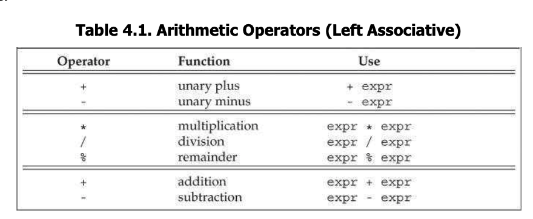
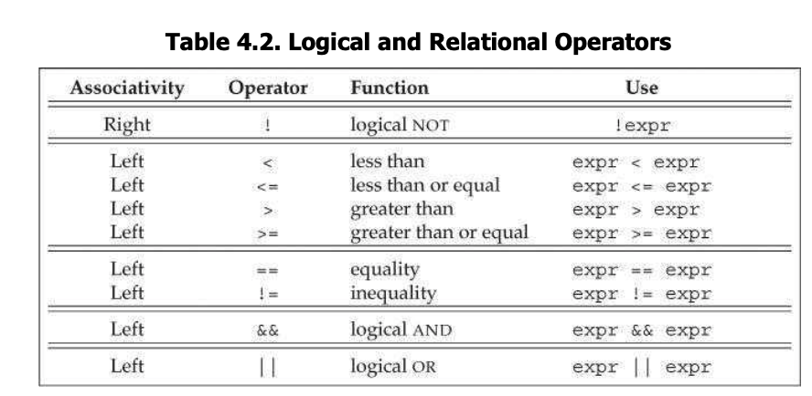
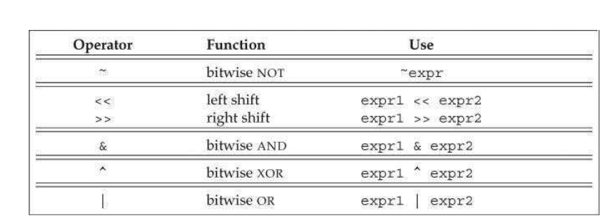
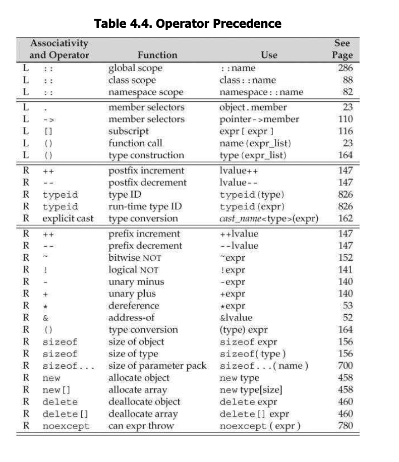
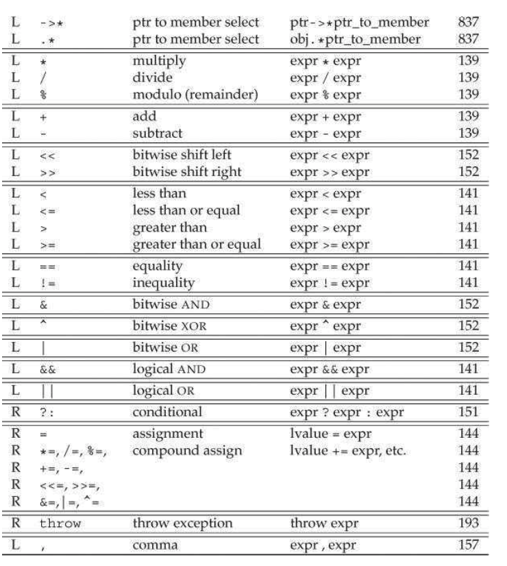

C++ Primer Chap 4 Expression
- A expression is composed of one or more
oprandsand yields aresult.
Fundamentals
- There are unary operators (such us
&and*) and binary operators (such as==and+). lvaluecould stand on the left-hand side of an assignment whilervaluenot.- Operators differ as to whether they require a
lvalueotrvalue, we can uselvaluewhen ask forrvalue, but not other direction.
decltypediffers betweenrvalueandlvalue, when we appledecltypeon an expression, the result is a reference if the expression returns arvalue(e.g. p isint *,decltype(*p)will returnint &)
- Operators differ as to whether they require a
- Order of evaluation
int i = f1() + f2(), we donn’t knowf1()will be called first orf2()will be called first. Operators does not specify the order.- There are few exceptions:
AND (&&)(left-hand oprand is evaluated first),OR(||),conditional (? :),comma (,). - Order of evaluation is independent of precedence and associativity.
Arithmetic Operators

- The oprands and results of Arithmetic operators are rvalues.
- Arithmrtic operators can be applied to any of the arithmetic type and any type that can be converted to arithmetic .
- The
%returns the remainder of two integer value. Note that the operands to%must have integer type. - In
C++11, when m,n > 0,- (-m / n) and (m / -n) are always equal to (-(m/n)),
- m%-n is equal to m%n;
- (-m) % n is equal to -(m%n).
Logic and Rational Operators
- The oprands to these operators are rvalues and the result is an rvalue. 
- The logic
ANDandORoperators always evaluate their left operand first, and evaluate their right operand if the left operand cannot determine the results. - The relational operators return a bool type, so nested relational operators may yield a surprising result (e.g. i < j < k).
truewill be converted to 1 as int, andfalsewill be converted to 0 as int.In practice, it is better to use const reference instead of copying.
- If we want to test the truth value, the most direct way will be
if (val)orif (! val). If we are usingif (val == true), some problem will raise if val is not a boolean type. In this case, true will be converted to the typevalhas, and leads to a surprising result.
Assignment operators
- The left-hand operand of an assignment operator must be a modifiable lvalue.
- Assignment is right associative.
ival = jval = 0will evaluatejval = 0first and returnjval. (assignment will return its left-hand operand) - Assignment has low precedence than the rational operatos, parentheses are usually needed around assignment.
- Compound Assignment operator include
+=, -=, *=, /=, %=and<<=, >>=, &=, ^=, |=(bitwise operators.)
Increment and Decrement operator
- The
++and--operators are useful for iterators, since many iteratos do not support arithmetic. ++iwill add 1 toifist, then return the updatedi.i++will add 1 toi, and return unchangedi- These operatos require
lvalue, the prefix one return the object itself as lvalue; the postfix one return a copy of the object’s original value as rvalue. - E.g.
pbedis an iterator type.*pbed++print the current value and advance pbeg. It is equivalent to*(pbeg++), and is commnly used in C++. - Since order of oprand to be evaluated is undefined, to write expression involved
++and--, should ask first what will happen if left-hand operand is evaluated first and what will happen if right-hand operand is evaluated first.
Use postfix operatos only when necessary.
The member Access operator
- The dot
.and arraow->provide for member access. Rememberptr->mem=(*ptr).mem. - Derederence has lower precedence than dot.
The Conditional Operator
string finalgrade = (grade < 60) ? "fail" : "pass"
- The conditional operator has the form
cond ? expr1 : expr2.expr1andexpr2must have the same type (or can be converted to same type). Ifcondis true, it will returnexpr1, andexpr2otherwise. The result of conditional operator islvalueif bothexpr1andexpr2returns lvalue. - The contional operator has fairly low precedence, so when use it in an output expression, a parenthesis should be added.
Nested Condotonal Operator: right associative.
The Bitwise Operator
-
The bitwise operators take operands of
integral typethat they use as a collection of bits. -
There is no guarantees for how the sign bit is handled, it is better to use unsigned types for bitwise operations. 
-
>>and<<operators: Bits are shifted off left or right, padding 0’s when necessary (bits << 8shifts bits to the left by 8 positions) -
~bitgenerates a new value with the bits of its oprand inverted. -
&,|,^are bitwise and, or and xor operator, they compare two integer value bits by bits.^is 1 either but not both oprands contain 1. -
Shift operatosare left associative, and it has precedence lowr than arithmetic operatos but higher than relation operators.
cout << 10 < 42; //error cout << 10 evaluates first.
The sizeof Operator
- The
sizeofoperator returns the size, in bytes, of an expression or a type name.- usage:
sizeof exprandsizeof (type). sizeofan array is the size of entire array.sizeofa string or a vector returns only the size of the fixed part.
- usage:
Sales_data data, *p;
sizeof (p); // size of a pointer
sizeof (*p); // size of which p points.
sizeof (data.revenue)
sizeof (Sales_data::revenue); //could use scope operator to fetch the members.
sizeof (ia) / sizeof (*ia) // returns the number of elements is ia, note ia is a array.
Comma Operator
- The
comma operatortakes two operands, which it evaluates from left to right. It guarantees the order. - The left-hand expression is evaluated and its value is discarded, the result of a comma expression is the value of right-hand expression.
Type conversion
-
Two types are related if there is a
conversionbetween them. -
Implict conversion: automatic conversion without programmer intervention.- In most expression, values of integral types smaller than int are first promoted to an appropriate larger integral type.
- In conditions, non
boolare converted tobool - In initialization, the inirializer is converted to the type of the variable.
- In assignment, the right-hand operand is converted to the type of left-hand.
- Conversion also happen during function calls.
-
Arithmetic conversion
- operands to an operator are converted to the widest type
- integral value in converted to an appropriate floating-point type.
Integral promotion: small integral types (bool,char,signed char,short…) are promoted to int.- Operands of
unsignedtype- when add an
ussigned intwith aint,intwill be converted tounsigned intfirst (when unsigned operand has a larger type than the signed operand; in other direction, the behaviour is undefined.)
- when add an
-
Other conversions
arrayis automatically converted to a pointer exceptaddress-of(&),sizeof,typeid,decltype.0andnullptrcan be converted to any pointer type. A pointer to any nonconsttype can be converted tovoid *. A pointer to any type can be converted toconst void*- If T is a type, we can convert a pointer or a reference to T into a pointer or a reference to
const T. Conversions defined by class type. For example. the IO library defines a conversion fromistreamtobool.
-
Explicit conversions
cast-name<type> (expression): type is the target type; if expression is a reference, then the result is an lvalue.-
static_cast: Any well-defined type conversion, other than those involving low-levelconst.
-
const_cast: changes only low-levelconst, “cast away theconst”
-
reinterpret_castperforms a low-level reinterpretation of the bit pattern.
// static_cast
double d = 3.14;
void *p = &d;
double *dp = static_cast<double *> (p); //fine.
// const_cast
const char a = 'a';
const char *pc = &a;
chat *p = const_cast<char *>(pc) // cast_away const, but writing through p is undefined since the object originally is a const.
char a = 'a';
const char *pc = &a;
chat *p = const_cast<char *>(pc) //cast_away const, can write through p.
//reinterpret_cast
int *ip;
char *pc = reinterpret_cast<char*> (ip)
 
Zhi Wang
Student at University of Waterloo
My research interests include distributed robotics, mobile computing and programmable matter.